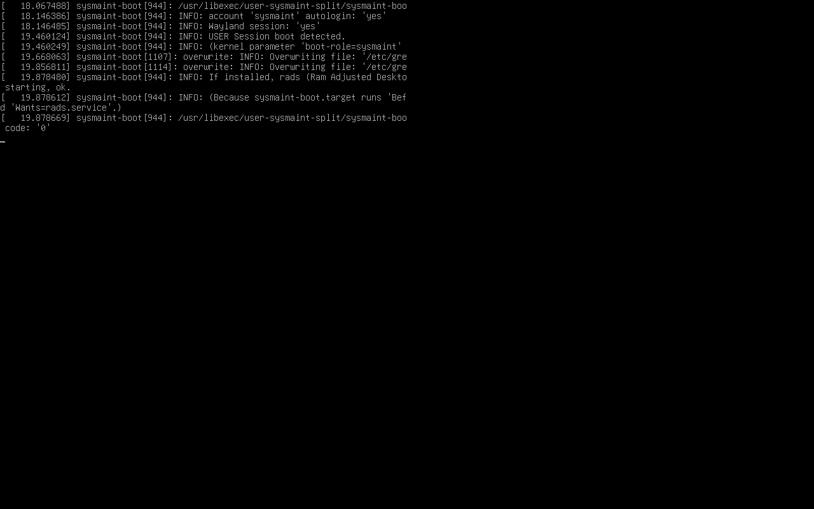
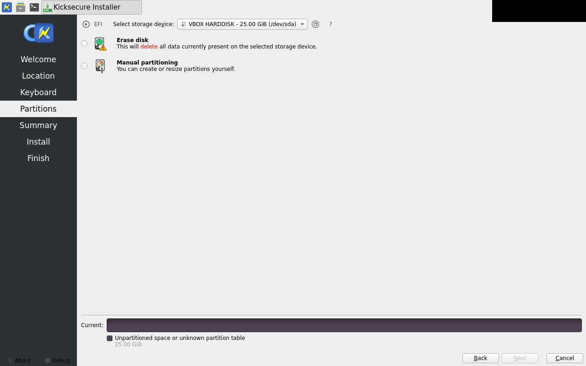
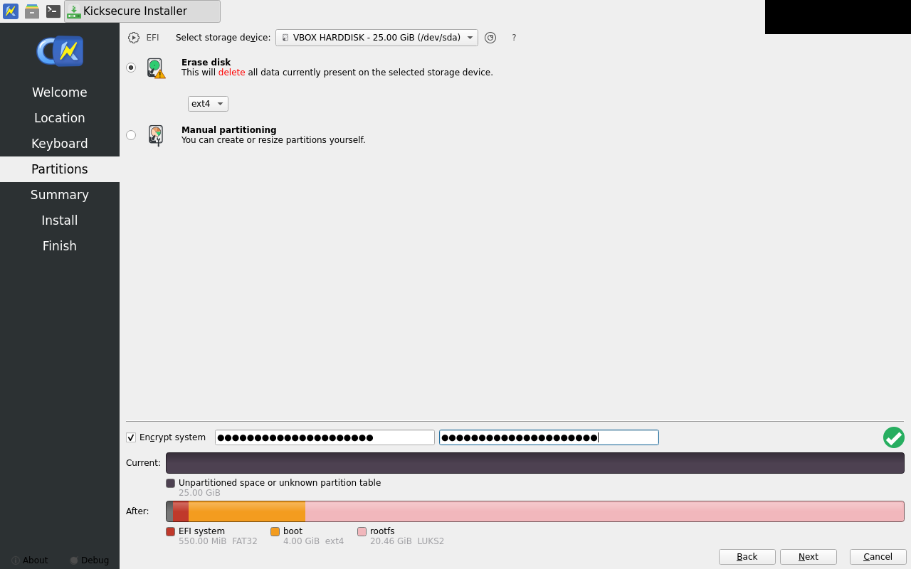
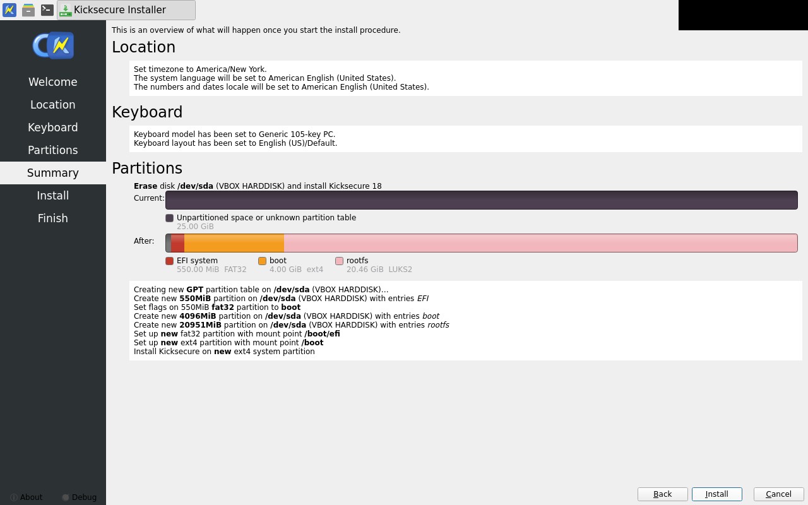
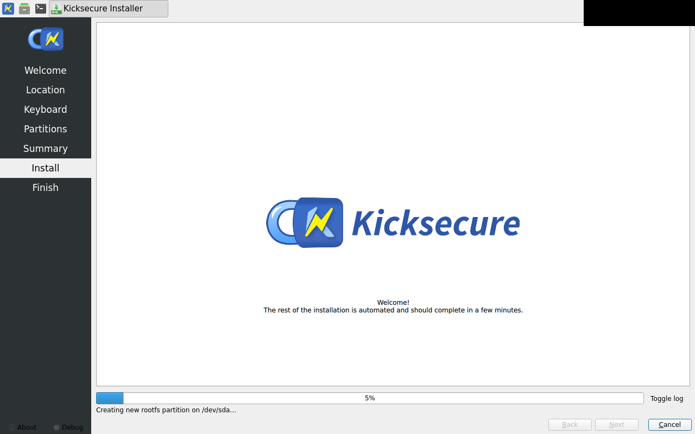
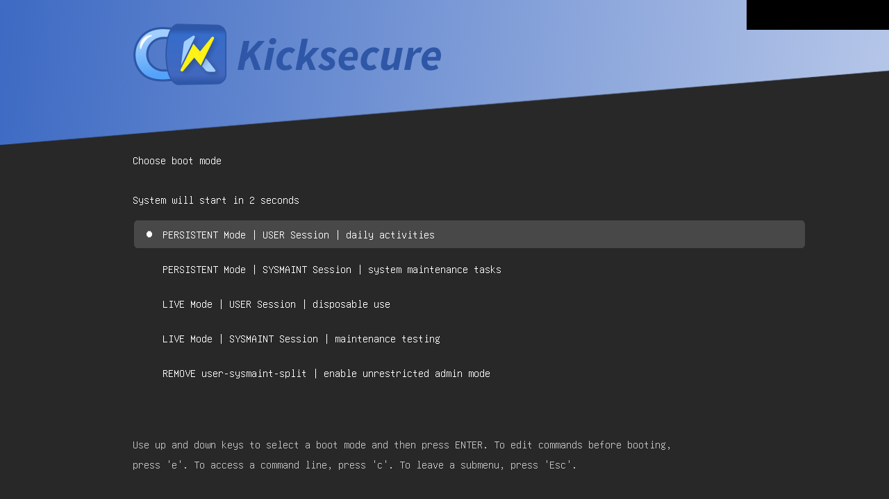
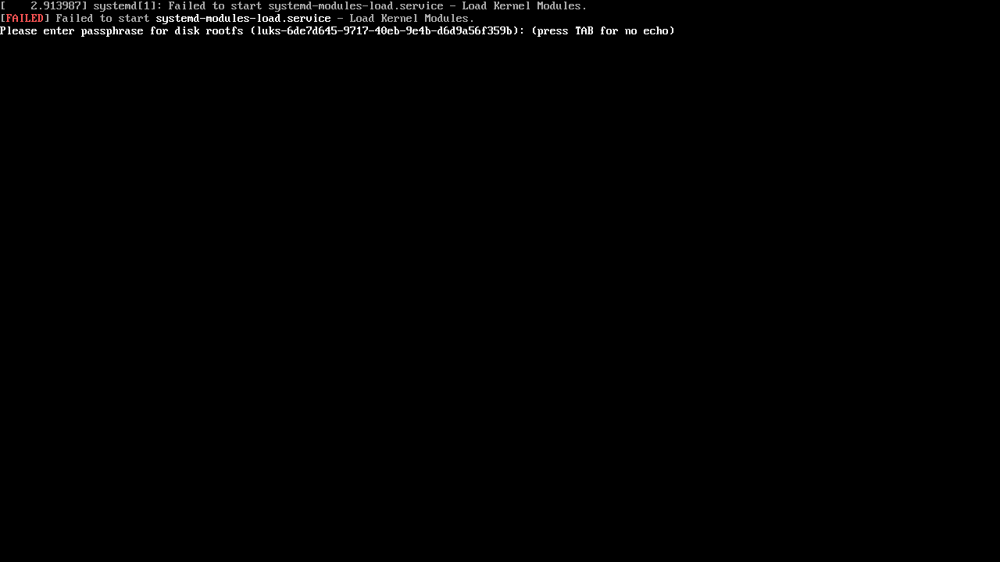
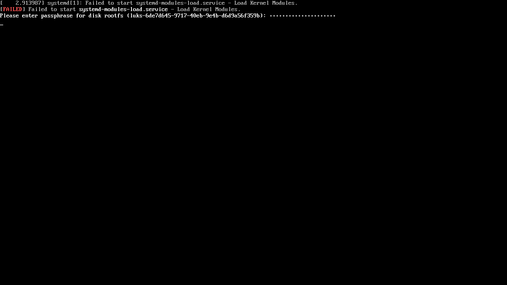

calamares-install fail
exit 5
dm-calamares-install FAILED (rc=5): could not read /var/lib/dkms/mok.pub off the installed disk via the 'vbox-disk-extract-mok' privleap action (did the MOK module run during install? is the action installed and the runner in vboxusers?).
new -- needs approval vm-defined — no approved golden yet
new -- needs approval firmware-logo — no approved golden yet

new -- needs approval firmware-state — no approved golden yet

new -- needs approval live-grub-menu — no approved golden yet

new -- needs approval live-grub-entry-selected — no approved golden yet

new -- needs approval live-kernel-boot — no approved golden yet
new -- needs approval live-desktop-ready — no approved golden yet

new -- needs approval live-guestcontrol-ready — no approved golden yet

new -- needs approval install-host-launched — no approved golden yet

new -- needs approval welcome — no approved golden yet

new -- needs approval location — no approved golden yet

new -- needs approval keyboard — no approved golden yet

new -- needs approval partitions — no approved golden yet

new -- needs approval partitions-luks-filled — no approved golden yet

new -- needs approval summary — no approved golden yet

new -- needs approval install-started — no approved golden yet

new -- needs approval install-done — no approved golden yet

new -- needs approval vm-stopped-iso-detached — no approved golden yet

new -- needs approval installed-firmware-logo — no approved golden yet

new -- needs approval installed-grub-menu — no approved golden yet

new -- needs approval luks-prompt — no approved golden yet

new -- needs approval luks-passphrase-typed — no approved golden yet
new -- needs approval luks-unlocked — no approved golden yet

new -- needs approval first-boot — no approved golden yet

new -- needs approval failure-vm-state — no approved golden yet